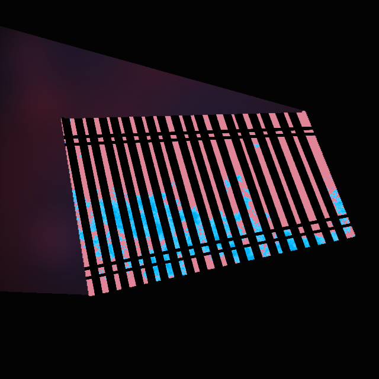
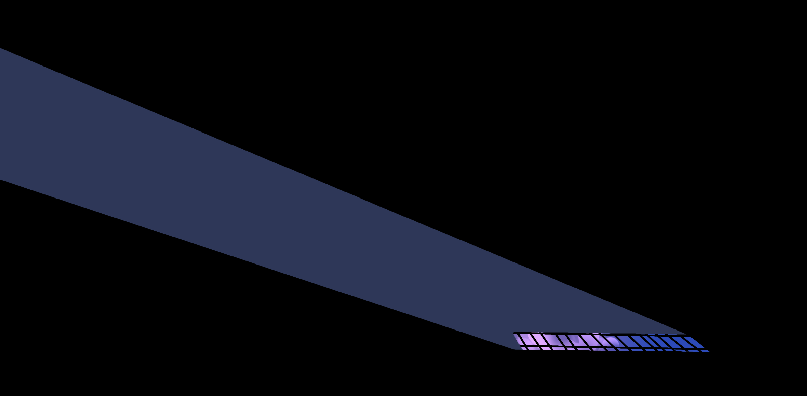
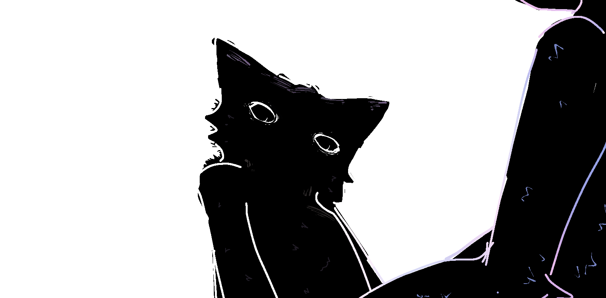

The wooden floorboards are stiff beneath you. You're sitting in a room.
It's dark...
Too dark... to see anything...
Flowing, from in front, like a wave, a sudden breeze of wind brushes against your face.
Which, traveling around you, provides a sense of defining shape to the rest of your body.
But... you don't hear it,
The sound wind makes...?
When you finally, very cautiously, open your eyes...
You see...

Seeing colors flicker... Like TV static...
Your eyes have to adjust...
Until... You see it clearer.
You try to reach out, to feel the illuminated floorboards beneath.
Reaching out, into the beam, a numbing feeling slowly overtakes your hand.
This feeling...
You can't tell if you're touching the floor, or feeling the texture of window blinds...
This numbing feeling, like sensible static, rushes up your arm without warning--
--You jolt your hand back as fast as you can!

Feeling is regained in the affected area naturally...
And, backing away, further...

...You begin to see the full picture.
This is a recurring nightmare.
Tell me, you remember it right?
What...
